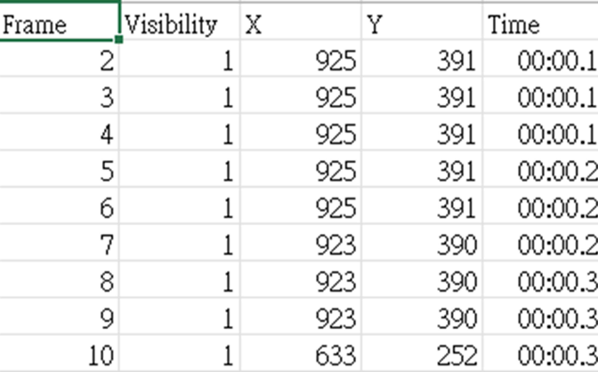
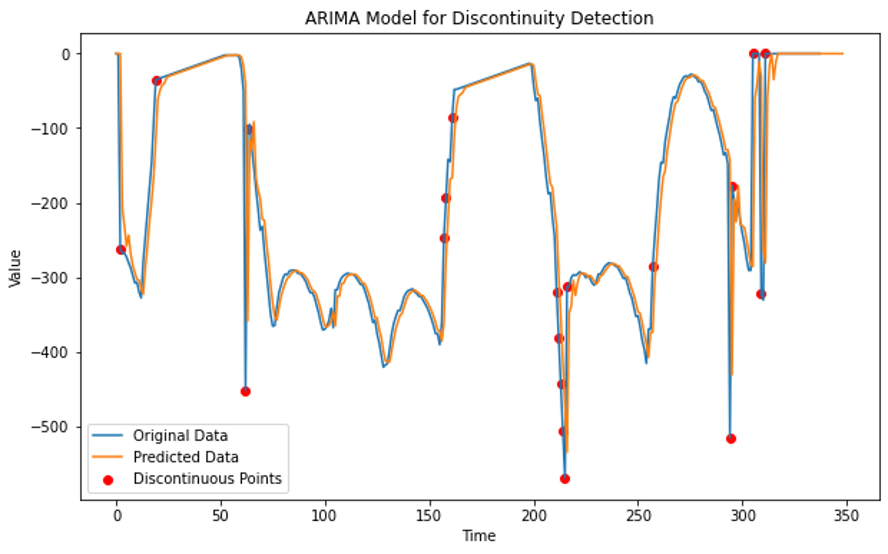
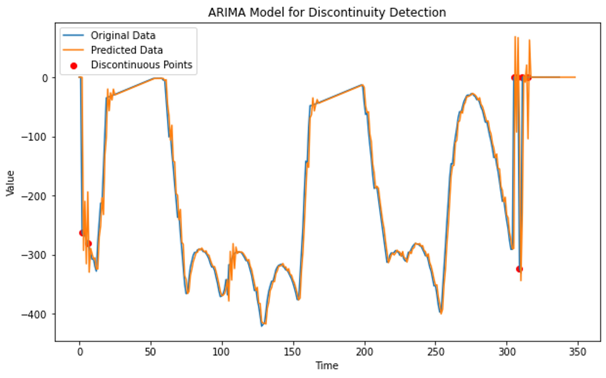
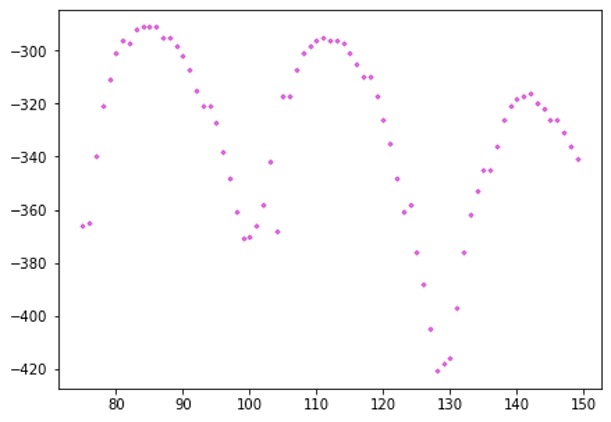
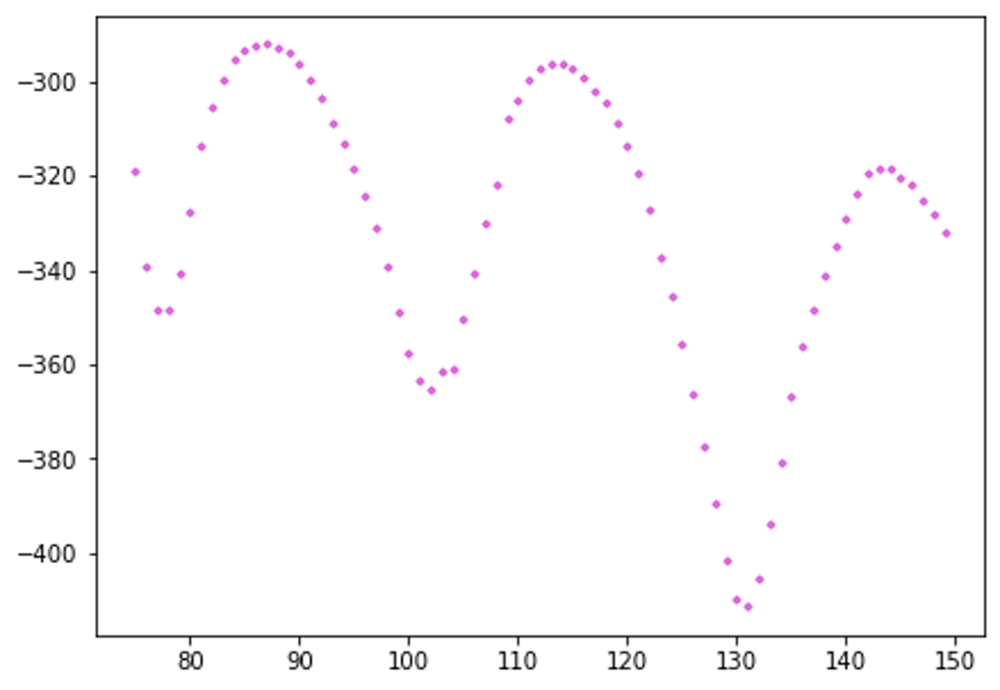
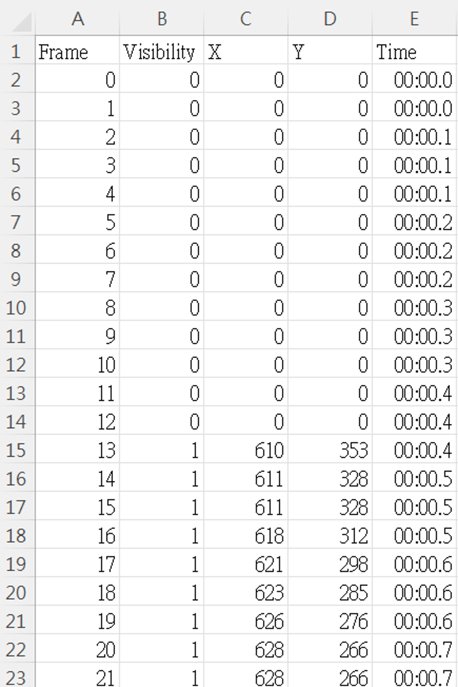

生成羽球座標位置
利用TrackNet2生成羽球座標以及影片。
TrackNetV2用於追蹤高速和微小的物體，例如羽球、網球等。
其原理是利用連續3張圖片輸入給網絡，最後輸出同樣寬度*高度*3的特徵圖，分別代表三張圖片輸出結果。
Arima資料矯正
以Arima尋找因偵測錯誤的異常，並利用前後幀進行修補。
修正前(左)/修正後(右)
 
ARIMA 演算法特別適用於可對應到固定時間序列的資料集。
它的作用類似於過濾器，可將信號與雜訊分離，然後推導未來的信號以進行預測。
MA軌跡平滑
利用移動平均濾波使Y軸軌跡平滑化。
 平滑前(左)/平滑後(右)
資料輸出
輸出CSV檔。
